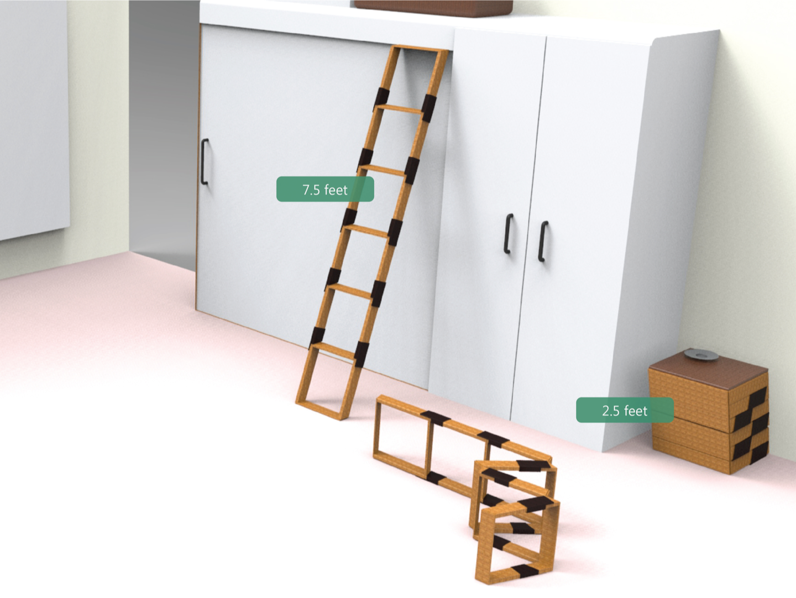

BACKGROUND
Ladders have always been difficult to carry around as they’re too big. The collapsible ladder was designed by me and a classmate as an entry for a design competition at the National Institute of Design, Ahmedabad in 2009.
HOW IT WORKS
The rung of each ladder has a hinge that allows the ladder to be folded. A locking mechanism prevents it from being folded while the ladder is being used.
After folding, it turns into a 2.5 feet tall structure which can also be used as a table or a storage unit.